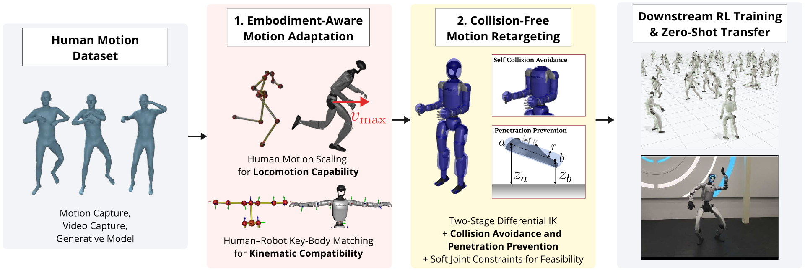

Beyond Pose Matching: Feasibility, Embodiment Compatibility, and Trackability in Humanoid Motion Retargeting
Abstract
Human motion retargeting provides a scalable means of generating reference motions for learning humanoid whole-body skills. However, a retargeted motion that closely matches the source human pose is not necessarily suitable for learning-based whole-body motion tracking. Embodiment differences, geometric incompatibility with the environment, and limited trackable motion range can lead to self-collisions, ground penetration, joint saturation, and excessively fast reference motions. This work studies humanoid motion retargeting from three perspectives: geometric feasibility, embodiment compatibility, and motion trackability. We examine these perspectives using collision-constrained differential inverse kinematics for nonpenetration, shoulder key-body correspondence for embodiment compatibility, and horizontal root-velocity scaling based on locomotion capability. Their effects are evaluated through controlled analyses of the corresponding failure modes. Across two humanoid platforms, the resulting retargeting design improves geometric feasibility and downstream motion-tracking performance over existing baselines. Physical-robot experiments further show that the resulting retargeting design improves execution repeatability for the evaluated motion.
Framework
